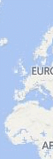
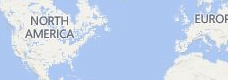

Custom Animations in Bing Maps
Introduction
Bing Maps is a very powerful mapping platform that is often used for creating engaging user experiences. The fluid interactive maps make for a great canvas when visualizing location based data. In this code sample we are going to take a look at how to make the user experience a little more engaging by adding custom animations that can be used in both web and Windows Store apps.
Building the Sample
To run the samples you must install the Bing Maps SDK for Windows Store apps and get a Bing Maps key for Windows Store apps. You must also have Windows 8.1 and Visual Studio 2013.
Any of the code samples that use Bing Maps will have a string, “YOUR_BING_MAPS_KEY”, in the code where you will need to specify your Bing Maps key.
If you are using Bing Maps in a C# or Visual Basic app you will need to perform the following steps for your app project to work correctly with Bing Maps.
- Add a reference to Bing Maps SDK for C#, C++, or Visual Basic if the reference isn’t already there.
- Set the Active solution platform in Visual Studio to one of the following; ARM, x86 or x64
- Add a reference to Microsoft Visual C++ Runtime Package.
Description
This code sample shows how to create several different types of animations. Here is are some fo the animations that are included:
| Scaling Pushpin when hovered |  |
| Drop a Pushpin |  |
| Bounce a Pushpin |  |
| Animate Pushpin along a straight line path |  |
| Animate Pushpin along a geodesic path |  |
| Animate the drawing of a straight line path |  |
| Animate the drawing of a geodesic path |  |